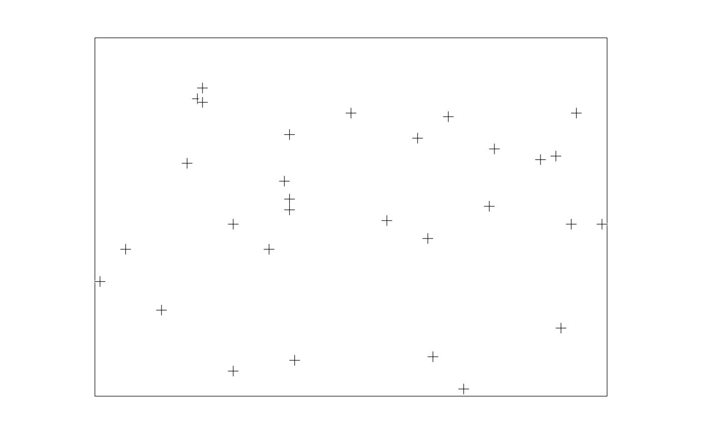

scplot: three related ways of showing an x/y relationship, all
in one command via type – plain symbols (the default), a
sunflower plot (symbol density shown as petal count, for data too
crowded for plain symbols to read), or a lowess-smoothed curve.
Usage
tda_pl_scatter(
p,
x,
y,
type = c("points", "sunflower", "lowess"),
symbol = NULL,
size = NULL,
grid = NULL,
bandwidth = NULL,
select = NULL,
clip = TRUE,
lty = NULL,
lw = NULL,
...
)Arguments
- p
a
tda_pssession.- x, y
variables in the session's data, or coordinates.
- type
"points"(default),"sunflower", or"lowess".- symbol
marker symbol, for
type = "points".- size
marker (or, for
type = "sunflower", petal) size in mm.- grid
for
type = "sunflower", the grid the plot area is divided into to group nearby points, asc(nx, ny)or one number for both; TDA's default isc(1, 1).- bandwidth
for
type = "lowess", the smoothing factor; TDA's default is 0.5.- select
a case-selection expression, TDA's
sel=.- clip
clip points to the plot's declared range (the default);
FALSEturns this off (scplot'snc=1), letting a point outside the range draw past the frame.- lty, lw
line type and width for
type = "lowess"'s fitted curve.- ...
further options for the command, e.g.
d=/ns=fortype = "lowess"– distinct frombandwidth'ssig=, and not promoted to their named parameters since TDA's help text for them ("optional parameter for opt=3") does not say what they control.
Examples
set.seed(1)
d <- data.frame(x = round(runif(30, 0, 10), 1),
y = round(runif(30, 0, 10), 1))
p <- tda_ps(d, xlim = c(0, 10), ylim = c(0, 10))
p <- tda_pl_frame(p)
p <- tda_pl_scatter(p, "x", "y", symbol = 1)
plot(p)

# a lowess-smoothed curve instead, on data with a real nonlinear trend
d2 <- data.frame(x = sort(round(runif(30, 0, 10), 1)))
d2$y <- round(0.5 * d2$x^1.5 + rnorm(30, sd = 1), 2)
p2 <- tda_ps(d2, xlim = c(0, 10), ylim = c(0, 20))
p2 <- tda_pl_frame(p2)
p2 <- tda_pl_scatter(p2, "x", "y", type = "lowess", bandwidth = 0.6,
lty = "dashed")
plot(p2)